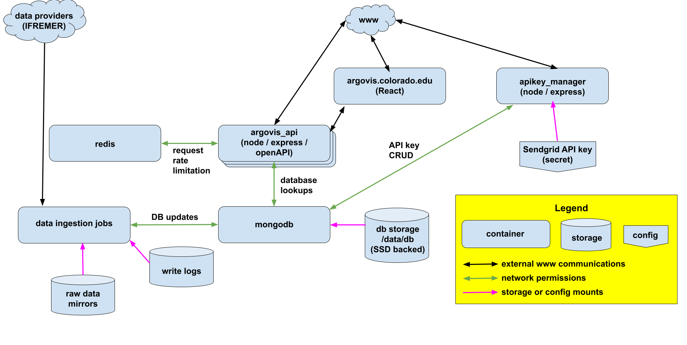

Argovis Deployment Architecture¶
Argovis is architected as a Kubernetes application, to take advantage of that platform’s scalability, security and orchestration features. We also offer a Docker Swarm deployment model to leverage environment where a managed Kubernetes deployment is unavailable or impractical.
Application Architecture¶
Argovis is orchestrated per the following diagram:
Refer to https://github.com/argovis/argovis_deployment for exact details of how this is implemented, in the Helm chart in that repo for Kubernetes, or the startup script provided for Docker Swarm. Some high-level considerations if planning to deploy to another environment:
Ideally, MongoDB should be running sharded across a cluster, with significant (64 GB RAM or more) allocated to each shard. As this is usually impractical, make sure the storage mounted to
/data/dbis a local SSD, preferably regularly backed up.MongoDB getting rescheduled is disruptive; use your orchestator to reserve compute resources to prevent it from getting evicted.
Consider using anti-affinity rules where available to make sure API and database containers are as spread out across your cluster as possib;e.
You may optionally consider putting a reverse proxy between the web and the public facing components; see a simple example of an nginx configuration that accomplishes this at https://github.com/argovis/proxy. Alternatively, some managed orchestration platforms (like Openshift at CU) provide public URLs and certificates that may be consumed directly.
Last reviewed 2023-03-09